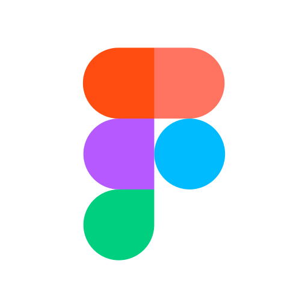

Fundación Vida Abundante 201 | Sitio Web
HTML
CSS
JS
Pagina web principal de la Fundación Vida abundante ubicada en Magangué, Bolivar pertenenciente a la iglesia Intermericana Principe de Paz.
¡Hola! Mi nombre es José Rubén Guzmán Canedo y soy Desarrollador Front-End, he realizado varios proyectos personales y un proyecto de una Fundación ONG, tengo un certificado de Desarrollador Front End y soy Ingeniero de Sistemas en formación.

Colombiano / 25 años
Tecnologo en Sistemas de Información y Redes de Computo (Universidad del Sinú - Seccional Cartagena)
HTML
CSS
JS
Pagina web principal de la Fundación Vida abundante ubicada en Magangué, Bolivar pertenenciente a la iglesia Intermericana Principe de Paz.
HTML
CSS
JS
To do List basico para guardar, tachar y eliminar tareas y pendientes, diseño minimalista y fluidez optima en PC y Telefonos moviles
HTML
CSS
JS
Calculador de promedio de notas minimalista y dinamico, disponible para anexar la cantidad de notas necesarias y su valores en porcentaje.

HTML

CSS

JavaScript

Java

Boostrap
PHP
Python
Git
SQL
Figma